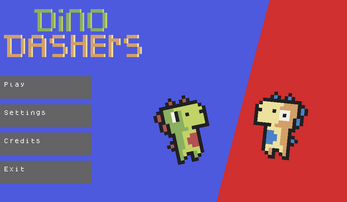

A Local-Multiplayer platformer where you controller a dino who can grow grass from his feet.
Controls:
Player 1 : WAD - Movement S - Use Ability
Player 2 : Arrow Keys - Movement Down Arrow Key - Use Ability
This is a prototype of a game made for the GoGodot Jam and many more features may be added later.
Downloads:
Windows Download (41MB) MacOS Download (55MB)© 2023 Nervous Beehive